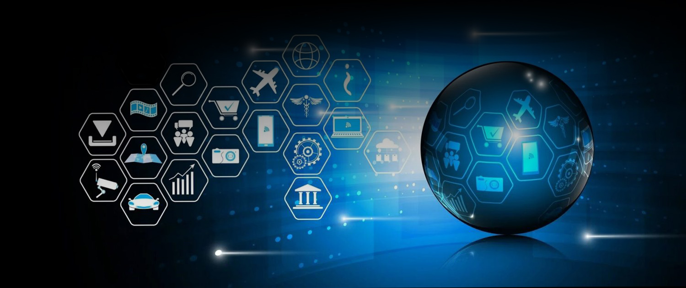

Aspectos Importantes da IoT
Outro aspecto importante da IoT é a análise de dados. Os
dispositivos IoT coletam uma grande quantidade de dados, que podem
ser analisados para gerar insights valiosos, melhorar a
eficiência, prever falhas e personalizar serviços. Em cidades
inteligentes, sensores de tráfego ajudam a gerenciar o fluxo de
veículos, sistemas de iluminação pública economizam energia e o
monitoramento ambiental garantem a qualidade do ar e da água. Na
agricultura, sensores monitoraram as condições do solo e do clima,
ajudando os agricultores a melhorar a eficiência e o uso de
fertilizantes.
A IoT também promove uma interação entre dispositivos de forma
autônoma. Isso significa que os dispositivos podem responder a
mudanças no ambiente ou nas condições de operação sem a necessidade
de intervenção humana. Na indústria, por exemplo, o monitoramento de
máquinas e equipamentos para manutenção preditiva pode reduzir o
tempo de inatividade e aumentar a eficiência operacional.

Apesar das inúmeras vantagens, a IoT também apresenta desafios, como
a segurança dos dados e a privacidade, já que os dispositivos podem
ser vulneráveis a ataques cibernéticos. A integração de
dispositivos de diferentes fabricantes pode ser complexa devido à
falta de padrões comuns, e gerenciar uma grande quantidade de
dispositivos e o volume de dados gerados requer uma infraestrutura
robusta e escalável.
A Internet das Coisas está transformando diversos setores,
melhorando a eficiência, reduzindo custos e possibilitando novos
serviços e modelos de negócios. Com a evolução tecnológica contínua,
a IoT promete continuar a inovar e influenciar nossa forma de viver
e trabalhar.